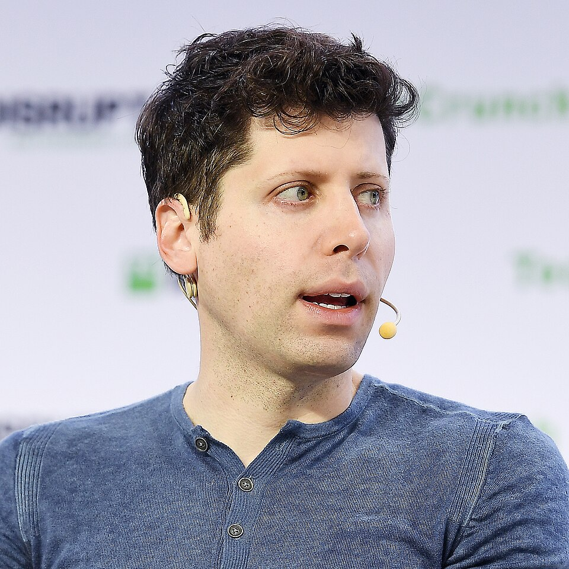

Researcher → creator
Andrej Karpathy
One of the most-cited AI researchers now publishes multi-hour lectures on YouTube and posts on X almost everyday.
A financial market where anyone can invest in any online IP's engagement. Before we get to the product, start with something that may seem obvious — because everything else follows from it.
Human attention prices ads, sponsorships, distribution, cultural leverage, and founder reach. It has already become an asset. And more people — and more companies, across industries — are producing content on every platform: podcasts, articles, video. Platforms that began as pure entertainment are now swarmed by knowledge content.
One of the most-cited AI researchers now publishes multi-hour lectures on YouTube and posts on X almost everyday.

The most valuable AI company routes its biggest announcements through TBPN, a daily talk show — leadership included.
Marc Andreessen's firm runs a full in-house media operation — podcasts, shows, essays — publishing more than the outlets that used to cover it.

Lightspeed's current venture partner built her audience making talking-head videos.
Why? Because catching eyeballs — drawing meaningful human attention — converts into real fiscal value. When the people allocating capital are themselves creators, attention as an asset stops being a metaphor.
The asset is aggregated fan conviction.
Only the platforms and the creators make money. There is no economic upside for the consumers — the viewers who already spend money and create the value the whole system runs on.
Companies spend hundreds of thousands of dollars on influencers without knowing what the real conversion will be. That is happening every day in AI right now.
An original sin of the creator economy
There is no aligned upside for the people who matter most — the fans.
Instagram, Twitch, TikTok/Douyin, Bilibili, YouTube — every platform has a money flow from fans to creators. Look at who captures the value.
The question was never whether fans will fund creators. They already do. The question is: what if funding came with upside?
"Every time you like a post, every time you retweet something, that's a signal to an algorithm… all of these algorithms are predominantly focused on increasing impressions, because that increases advertising revenue."
Backer is a financial market where people invest money to bet on any online IP's engagement. Prediction markets price events. Backer prices people's future attention.
Prediction markets proved it at scale: give people a way to stake money on what happens next, and billions of dollars a month show up to do it.
The attention economy proved the other half: fans pour money into creators knowing there is no aligned return. Backer sits exactly where those two proven behaviors meet.
Wherever human attention concentrates, capital follows — and a market forms to price it. Prediction markets just proved that behavior at scale. Backer applies it to what attention actually orbits: people.
Kalshi + Polymarket, combined monthly notional volume
Endpoints as reported; months between are interpolated for illustration.
The money isn't hypothetical. It already moves from believers to people — today, with zero return attached.
Every number on a creator's profile can be manufactured — fabricated, even. So we learn from the best market makers in the world: quantitative hedge funds monitor the sentiment around a stock by analyzing news channels, analyst reports on Substack and Medium, Reddit, and Twitter. Backer applies the same discipline to attention.
Agents monitor and analyze the publicly available data on every major platform: likes, comments, reposts, views; the frequency of their spikes; the sentiment inside the comments. The output is a whole picture of the composition of attention — per content, per creator.
@marcus.films · YouTube · 90 days
Point estimates total 100%. Ranges may overlap because uncertainty is shown, not hidden.
Evidence for Comment breadth held across eight uploads while public-view velocity normalized after the largest spike.
Watch Low output cadence and incomplete source coverage increase uncertainty.
Estimated composition from observable public signals. This is creator underwriting—not a creator valuation, market price, probability, or settlement oracle.
Businesses run it before committing marketing budget to an influencer — instead of spending hundreds of thousands of dollars blind. Investors decide for themselves whether knowing the full composition of attention matters before taking a position.
High attention, real uncertainty, measurable outcomes, and strong disagreement — the four conditions under which a prediction and trading market can form.
The exact conditions that made events tradable already hold for the people who hold the internet's attention.
Backer turns those beliefs into tradable positions.
"Find fitness creators under 5K followers posting 3× a week, growing steadily, retention-heavy — ideally university students." The agent traverses public data across platforms and ranks candidates by authenticity and trajectory.
SoundCloud rappers, niche educators, Bilibili vloggers, Substack writers. They link their existing platforms and establish a verified profile. We score them. You browse and back them.
"If I reach 50K subscribers in 12 months, early backers receive 1.5×." Your portfolio isn't just a tracker — it's public proof-of-taste. A record of early bets that paid off is its own social capital.
Every instrument is shown from both seats — the backer taking the position, and the creator whose market it is. Backer takes a fee on flow, never a position.
Backers on the correct side split the pool, minus Backer's fee.
You win the pool minus the fee, in proportion to your share of the winning side. Side with the crowd and win pennies; be right against it and get paid multiples.
She earns a royalty from the market fee — proposed 40% of it, 60% to Backer — whether the milestone hits or misses. The volume her market attracts pays her; her backers' losses never do.
The insight: it's the first instrument that converts belief in a person into a priced, settleable claim — without touching equity.
Relative performance, not absolute targets. Relative markets are harder to manipulate — a creator can inflate their own numbers, but not suppress a rival's.
Same pooled mechanics as a milestone — you're pricing which of the two compounds faster, not an absolute number.
The two creators share the royalty from the market fee. The battle itself pays both of them, whoever wins — so agreeing to a PK is rational for both sides.
The insight: PK markets price taste — the ability to spot the winner before the algorithm does.
The index is a PoA-weighted composite of reach, engagement quality, and durability. Continuous price discovery on a human being's trajectory.
Your dollar tracks the index. No pool, no resolution date — conviction without an expiry.
A share of every entry and exit fee on their index accrues to the creator — a continuous royalty on the trading volume their trajectory generates.
The insight: milestones and PK markets generate the price history; perps are where that history compounds into a continuous market. Binary events bootstrap the data that makes perpetual markets underwritable.
Milestones price outcomes. PK prices comparison. Perps price the person, continuously.
Put in any numbers, pick a scenario, and watch where every dollar goes — including the creator's cut of the fee.
$1 × ($100 × 0.90) ÷ $20 = $4.50
Fee $10 → $6 Backer revenue · $4 creator royalty (proposed 60 / 40)
The pool balance is the price: side with the crowd and win pennies — be right against it and get paid multiples.
The one-line version: you win the pool minus the fee, in proportion to your share of the winning side. On a perp, your dollar simply tracks the index. The creator earns a royalty from the fee either way — more detail in the FAQ.
Prediction markets are already enormous. Look at what they price, and what they leave unpriced.
Roughly 90% of volume is sports, politics and crypto. Kalshi is in a head-on fight with online sportsbooks adding prediction markets to their own products.
Same composition, same fight — against crypto exchanges bolting prediction markets onto their venues. Both are defending their core, not exploring new asset classes.
Meta is entering too: Arena, a Kalshi / Polymarket equivalent, is under development. A third giant validating the same category.
None of them touch the attention economy — and not because the upside is limited. Diverging into a whole new sector means a whole new definition of the market: pricing creators, and collaborating with them to share profit. That's not a wise detour for platforms defending sports and crypto flow. It's the entire company for us. Their volume proves capital follows eyeballs; their absence leaves the people layer unpriced. Those markets monetize the bet, not its subject. Backer aligns both sides: viewers can profit from early conviction, while creators share in the value their attention creates. That's Backer's lane.